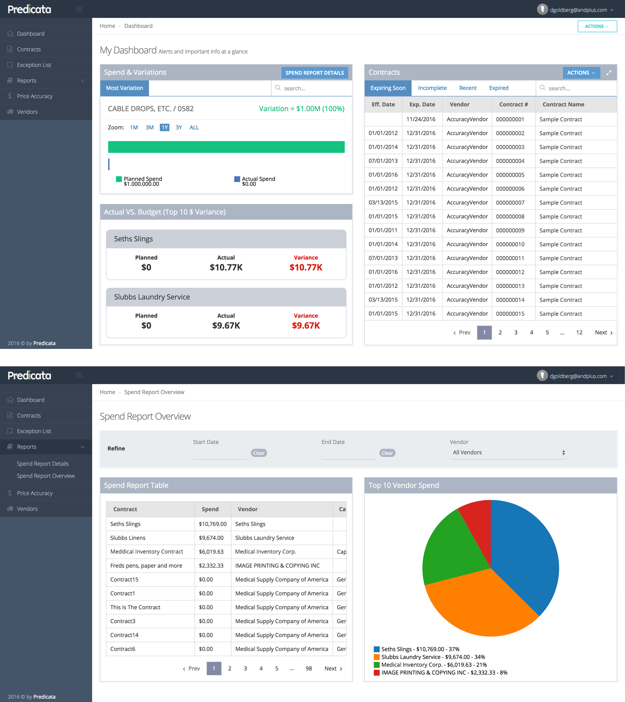

Everything is designed. Few things are designed well.
- Brian Reed
- Brian Reed
Contact
You can always reach me at jslavuter@gmail.com, promise.
You can always reach me at jslavuter@gmail.com, promise.
Thousands of brands and enterprise marketers use Conductor’s cloud-based SEO platform to manage their search visibility and the performance of their web content. When it comes to enterprise reporting, our users needed a quick and easy way to view reporting insights for multiple brands across different search engines, locations, and devices.
Create a comparison reporting tool to help users in two ways:
| Timeline |
|---|
| 3 months |
| Tools |
|---|
| Zendesk, Airtable, Sketch, Zeplin, and Gong |
| Activities |
|---|
| Research, Conceptual Design, Validation Testing, Detail Design, Usability Testing, and Documentation |
How do you prioritize your SEO and content marketing efforts for multiple brands with individual websites, accessed by millions of users across different search engines, locations, and devices?

Tools used:
Assessing pain points in the workflow. It starts with the user. Configuring and saving lots of similar reports is a very time-consuming and repetitive process. We started by conducting several user inquiries and scouring through product feedback. Our findings were that users had two major pain-points that we needed to address:
Tools used:
Working with the product manager, I outlined a two-pronged approach to meet our users needs:
1) We could enhance the primary Keyword Performance feature to support multiple context reporting. This feature allows customers to deep dive into analysis on the visibility of individual keywords they're tracking for their website. By adding multiple context reporting, enterprise users would be able to aggregate and filter their visibility data across a range of dimensions.
2) We create a visibility comparisons feature, which would allow users to apply various contextual lenses on their keywords to surface summary level insights about which contexts to prioritize their efforts on.
Tools used:
After reviewing product feedback, we noted that our users vocalized a need to better understand their website visibility and optimization priorities based on location. Location is one of the most important reporting attributes for enterprise customers. Their websites receive millions of visitors from a variety of locations and they spend a great deal of effort optimizing their website content based on each one.
This spurred several rounds of design concepts and feedback sessions. I experimented with reporting on various metrics (monthly search volume, number of local results, top ranking results, count of volatile keywords, market share). I also tested different data visualizations to better understand how the user would effectively process and act on this information.

Tools used:
Conducting validation with the customer service team and customers led to the following insights:
Tools used:

Thousands of brands and enterprise marketers use Conductor’s platform to manage their search visibility in search results and the performance of their web content. However, as search engines like Google evolve from ten blue links to more dynamic content, our users needed deeper insights on how they were showing up in results. For example, when and where are videos or local results appearing? As designer on this project, I set out to optimize our reporting capabilities to give marketers deeper insights around their performance.
| Timeline |
|---|
| 4 months |
| Tools |
|---|
| Zendesk, Airtable, Sketch, Gong, Axure, Pendo, and Heap |
| Activities |
|---|
| Research, Conceptual Design, Validation Testing, Detail Design, Usability Testing, Documentation, and Acceptance Testing |
Previously known as Content Types, this feature surfaced information on how results appeared in search results. It was a good starting point, but there were data gaps (no information on result type ownership), and the design was stale.

Tools used:
Gathering and prioritizing product feedback. Understanding the layout of a search results page wasn't enough information for our users - they needed to understand where they owned various stand-out features on search results. We conducted several user inquiries and reviewed product feedback. Our findings indicated that users had four pain-points that we needed to address:
Tools used:
I started out by outlining what information would be most valuable to surface to users, and considered how best to build the right story. Continuing to offer summary level information, along with trending and detailed insights at a keyword level was crucial to the success of this report. I also saw an opportunity to provide additional touchpoints to drive users towards additional research and content optimization workflows.

Tools used:
Over the next month, I went through the process of iterating and soliciting feedback on design concepts. I experimented with varying our information architecture, highlighting only the highest performing result types, allowing users to focus on a single result type and trending it over time, and displaying ownership data for each result type independently (as well as comparatively for multiple result types.)

Tools used:
After several rounds of testing, my participants left me with a clear direction on enhancing this feature. We needed to make it simple to understand all result types by providing the following functionality:
Tools used:
I added a summary widget to support information on all result types - gone were the days where users had limited summary information. This allowed the user to quickly glance across all result types, and immediately understand where they should prioritize their efforts. Additionally, users could now see their ownership for each result type, in a snapshot, and trended out over time. And lastly, users could now deep-dive into analysis workflows for each individual result type and link into additional reports to optimize their content and target result type opportunities.

Tools used:
Understanding ownership trends informs users about the search landscape. For businesses interested in educating their customers - this report could now help them determine what kinds of content their known competitors were creating. In doing so, they could fine tune their marketing efforts to create better targeted educational content, increasing the likelihood of them appearing at the top of the search page. Incorporating a view to focus on individual result types to see how result type ownership changes was vital.

Tools used:
The table widget was updated to support those users that needed to see appearance and their ownership of result types. Additionally, users could now view contextual details about each keyword - like top rankers, and whether competitors owned any results. And lastly, users could now drill into the Keyword Details and Page Insights features, closing the loop on their execution workflows.
Tools used:
For those users that need some additional information on result types, I wanted to bring our knowledge base to the forefront. I coded a custom a set of contextually accessible educational guides - supporting our less seasoned users to maximize the value of this feature.

Tools used:
After a successful beta and eventual GA release, this feature saw a jump in user engagement by approximately 100%. Today, this feature is frequently used by the majority of our users.
Check out the feature highlight on Conductor's blog

Understanding the search landscape and the level of content visibility therein is a difficult process. Search is constantly evolving, new mechanisms are being implemented at incredible speeds, and the search results page is a dynamic, often difficult to define space. My goal was to ensure that our users could not only understand its layout, but get deeper insights into how they appear there. Search results essentially reflect what the best answer is to a posited question.
What I have learned is that by educating users in context, providing the right fidelity of information to support their research needs, and helping them execute on their optimization goals - they'll not only become more efficient, but will ultimately provide more value to their customers.
Crunched is a full-service accounting platform that helps small businesses manage their finances. As the lead Product Designer on the team, I was tasked with outlining the information architecture, building out the design library, and designing an intuitive interface that enabled customers to easily maintain and automate their bookkeeping activities.
| Timeline |
|---|
| 9 months |
| Tools |
|---|
| Google Docs, Balsamiq, Axure, Gong, Sketch, and Zeplin |
| Activities |
|---|
| Wireframe, Visual Design, Interaction Design, Prototyping, Debugging, and Usability Testing |
As a business owner, how do you ensure all of your accounts are in good standing, and how do you track & communicate about your company's financial health?
Current accounting solutions are antiquated, bloated, and are often overpriced. Most small and medium sized businesses are looking for a simple solution - one that is intuitive, integrates with 3rd party services, and doesn't force the user to sign up for features they don't need.
Tools used:
Understanding accounting needs of businesses. Accurate accounting is always a major component of every business, but isn't often the main focus. Talking to the product owners and conducting lots of prospect interviews, we reviewed everything from double-entry bookkeeping to invoicing and tax law. Our findings led to several core activities that we needed to support:
Tools used:
I initiated wireframing core features such as the ability to record transactions. The first iteration of the feature set had to enable customers to manually enter in transactions before we could elevate the platform to smartly integrate with additional platforms. Having the ability to record transactions was paramount to establishing a proof of concept.
In parallel, I began to map out the information architecture and regularly checked in with our product owners to ensure that design direction was aligned with their vision.

Tools used:
Having a simple solution for users to input their transaction data, and doing so in a familiar manner was the first step in verifying that the concept was sound and usable, especially for an audience that had a history of using similar platforms.
Tools used:
After several rounds of validation testing, I determined several key user needs:
Tools used:
Crunched launched in April 2017. With a complete set of initial features delivered, their userbase rapidly increased. Customers quickly imported their accounting datasets into the platform to get started within minutes, managing their transactions within hours, and reporting on their business performance within days. The product owners were delivered a product with full design specifications.
Understand the vision. I designed the first version of Crunched with very clear goals in mind. I wanted to ensure that users could quickly integrate their data while transitioning from other accounting platforms, have full transaction management capabilities, ensure that they could adhere to compliance standards, effectively administer user permissions, and understand the financial health of their businesses. I also outlined the following design and development phase plan to ensure that Crunched could grow with the needs of their growing customer base.
"Crunched is the competitor to quickbooks I've been dreaming of!"
Industry knowledge. Accounting is its own language, and those in charge must be able to communicate effectively. From internalizing industry terminology, to pouring over compliance standards, to understanding accounting workflows - I was able to learn a great deal about this industry and all its professionals’ necessities.
End to end design. This application was a greenfield project. Starting from the ground up, I capitalized on a great opportunity to collaborate with the product owners to deliver an application that could contend with market giants. Building up the information architecture and design library, conducting research, and designing each feature, I was able to contribute to this project from strategic and tactical perspectives.
Predicata is a hospital/clinic inventory & contract management tool. The beauty of this application is that on top of standard tracking, these institutions will be able to instantly analyze their invoices against contracts.
Initial research was provided to us and I've had a good amount of time to conduct my own research efforts with potential users in various roles.
| Timeline |
|---|
| 4 months |
| Tools |
|---|
| JIRA/Conluence, Balsamiq, Marvel, Sketch, and HTML/CSS/JS |
| Activities |
|---|
| Contextual Inquiry, User Story Mapping, Wireframe, Prototype, Visual Design, and Interaction Design |
Tools used:
This project involves a lot of team members and a lot of moving parts. Since industry knowledge is a high friction area, I make sure to conduct as much research as I could before getting started. My goal was to familiarize myself with Predicata's current work flows, tool sets, and aspirations for the application we'd develop for them. Here's an overview of a successful sprint:

Tools used:
Research and prioritization are vital to the start of any development effort. When I work with various product owners, we create a backlog to outline a phase of a project. I help create user stories based on needs and priorities to give users a voice, provide direction to the engineers, and realize business value for my clients.
Tools used:
Research and prioritization are vital to the start of any development effort. When I work with various product owners, we create a backlog to outline a phase of a project. I help create user stories based on needs and priorities to give users a voice, provide direction to the engineers, and realize business value for my clients.
Tools used:
With this project, we had lots of variables. Multiple stakeholders (along with the product owner), multiple user roles, and multiple partners to collaborate with. Their process is complex, so we packed in as many smart features as possible to keep up with their needs. Oh, and the wireframes grew in fidelity too.
Tools used:
Aside from static wireframes, which might show the structure and some basic connections between views, I use prototyping tools to create a much more true-to-life experience. I use solutions like Marvel or Invision to give product owners something that they can interact with, the way they would with the finished app.


Tools used:
From creating to curating - there's no shortage of tools out there. The goal is a discussion and ultimately a decision establishing design direction for the application. For some projects, I use StyleTiles to display a "tasting menu" of various visual elements. For this project, I used Sketch to create the visual elements and ended up rendering various high-impact pages at the product owner's request.
Tools used:
Polish isn't easily achieved; it takes a keen eye and a willingness to design for how people internalize and interact. I attempted to focus on interaction design with the hope of providing the user an engaging and rewarding experience.

Predicata is about to reach completion of its first phase and will be pitched to a few major potential customers. While I work with engineers to tighten up the design, we are also conducting user testing, which will help us prioritize the next major epics and stories for phase 2.
Cognex creates image recognition hardware & software for a variety of industries. From barcode scanners to OCR systems, they combine a multitude of sensors in their devices for their customers to gather large amounts of data.
As consultants, we have been contracted to update their sales application. Since this is not a greenfield project, we've been tasked with 1) modernizing their application design, and 2) adding functionality to it.
| Timeline |
|---|
| 6 weeks |
| Tools |
|---|
| JIRA, Power Point, Marvel, Sketch, and Invision |
| Activities |
|---|
| Interface Inventory, Design Audit, Visual Design, and Prototype |
Tools used:
This is a relatively low-complexity project, so we're mostly focused on the design. That being said, it's a sales application, so refined interfaces are an absolute priority. Here's an overview of a successful sprint:
Tools used:
Considering this isn't a greenfield project, one of my first tasks was to assemble an interface inventory of their current application. Using a powerpoint template and basic screenshots, I was able to create an inventory and better understand the level of visual cohesiveness in the current app.
Tools used:
Cognex is an industry leader, providing technology to bring their customers' processing power into the 21st century, so their own sales app should reflect a forward-thinking design. Using screenshots of their current app, I was able to leverage Marvel to annotate right on top of their interfaces, allowing me to present feedback in a context that is familiar to the product owner.
Tools used:
After the design audit, my goal was to transform the current interface by applying industry standards, removing bloat from the UI and making it more intuitive for the user. Adhering to the Cognex brand guidelines, I synthesized an interface that would feel familiar, while taking cue from some of the most successful apps out there.
Tools used:
Having quite a few user flows completed in preparation for a presentation to the product owner and their team, I decided to use Invision as my solution. The benefit of switching to Invision is that I was able to use their Viewer companion app directly on an iPad, providing a realistic experience for the client.
*** Another bonus is that they're partnered with UserTesting to provide their integrated user testing solution from the prototype interface. I will definitely be looking into this option when the first set of prototypes is complete.
The Cognex redesign is still very much in its nascent stages. Currently, I am tweaking the design while collaborating with their in-house designer. Once the designs have been approved, their staff will test out the prototype and provide initial feedback. Lather, rinse, repeat.